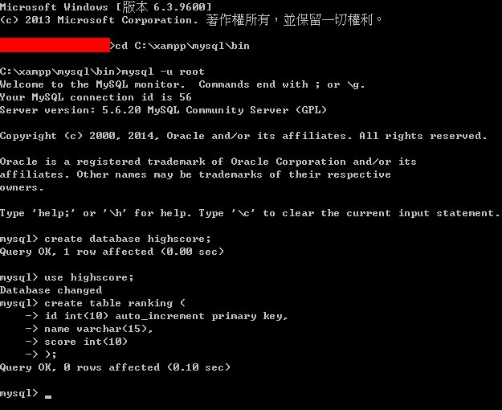
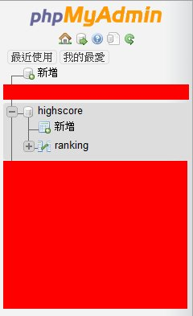
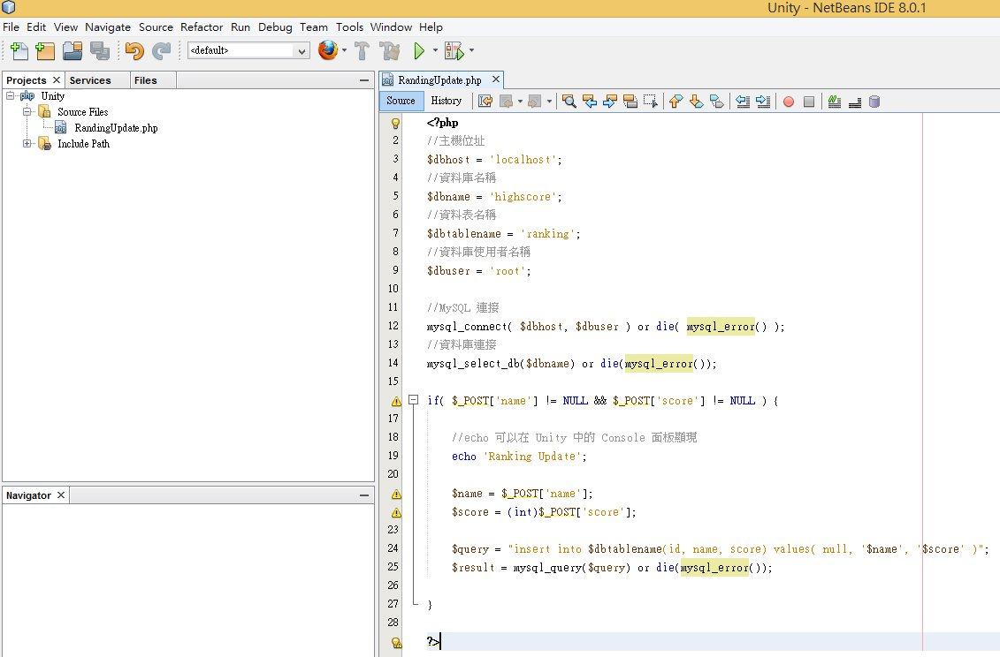
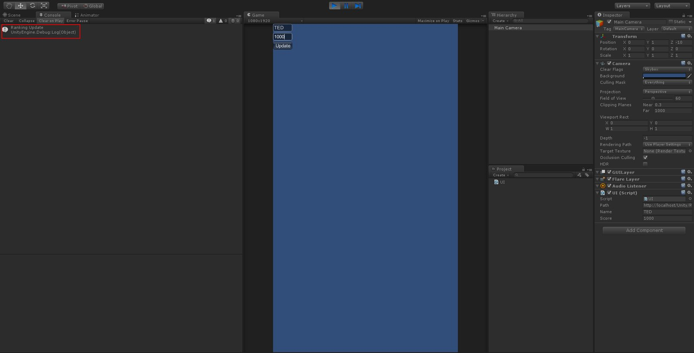
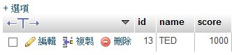
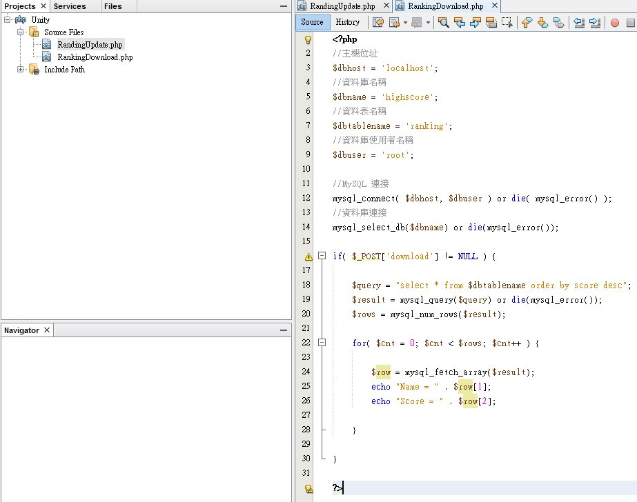
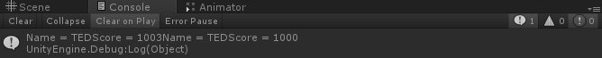

這篇文章中有使用到的工具有：
XAMPP：建立排行榜所需資料庫
NetBeans：撰寫 PHP 表單部分
Unity：撰寫客戶端發送請求
教學中所使用的 Username 為 root
是 MySQL 中預設的使用者帳號，也是權限最高的帳號
因為撰寫教學所以在這裡直接使用 root
建議實際撰寫時使用另外建立的使用者帳號
防止被駭客攻擊
先使用 MySQL 建立資料庫及資料表
mysql -u root
create database highscore;
use highscore;
create table ranking (
id int(10) auto_increment primary key,
name varchar(15),
score int(10)
);

資料庫及資料表建立完成後
可至 http://localhost/phpmyadmin 查看資料表是否建立成功

分數上傳
接下來開啟 NetBeans 撰寫分數上傳部分
建立一個新專案並命名為 Unity
新增一個 RankingUpdate.php 腳本

回到 Unity 建立 UI.cs 腳本
using UnityEngine;
using System.Collections;
using System.Collections.Generic;
public class UI : MonoBehaviour
{
public string path = "http://localhost/Unity/RandingUpdate.php";
public string downloadPath = "http://localhost/Unity/RankingDownload.php";
public string name;
public string score;
void OnGUI()
{
name = GUILayout.TextField(name, 10);
score = GUILayout.TextField(score, 10);
if(GUILayout.Button("Update"))
{
StartCoroutine("ScoreUpdate");
}
}
public IEnumerator ScoreUpdate()
{
WWWForm form = new WWWForm();
Dictionary<string,string> data = new Dictionary<string, string>();
data.Add("name", name);
data.Add("score", score);
foreach(KeyValuePair<string,string> post in data)
{
form.AddField( post.Key, post.Value );
}
WWW www = new WWW(path, form);
yield return www;
Debug.Log(www.text);
}
}開始後輸入名字及分數後按下 Update 按鈕
若成功則會在 Console 面板看到剛剛在 php 裡的提示
在 http://localhost/phpmyadmin 可查詢是否正確寫入資料


排行榜下載
在 NetBeans 中建立 RankingDownload.php 腳本

回到 Unity 更新 UI.cs 腳本
using UnityEngine;
using System.Collections;
using System.Collections.Generic;
public class UI : MonoBehaviour
{
public string path = "http://localhost/Unity/RandingUpdate.php";
public string downloadPath = "http://localhost/Unity/RankingDownload.php";
public string name;
public string score;
void OnGUI()
{
name = GUILayout.TextField(name, 10);
score = GUILayout.TextField(score, 10);
if(GUILayout.Button("Update"))
{
StartCoroutine("ScoreUpdate");
}
if(GUILayout.Button("Download"))
{
StartCoroutine("ScoreDownload");
}
}
public IEnumerator ScoreUpdate()
{
WWWForm form = new WWWForm();
Dictionary<string,string> data = new Dictionary<string, string>();
data.Add("name", name);
data.Add("score", score);
foreach(KeyValuePair<string,string> post in data)
{
form.AddField( post.Key, post.Value );
}
WWW www = new WWW(path, form);
yield return www;
Debug.Log(www.text);
}
public IEnumerator ScoreDownload()
{
WWWForm form = new WWWForm();
Dictionary<string,string> data = new Dictionary<string, string>();
data.Add("download", "1");
foreach(KeyValuePair<string,string> post in data)
{
form.AddField( post.Key, post.Value );
}
WWW www = new WWW(downloadPath, form);
yield return www;
Debug.Log(www.text);
}
}接下來在遊戲中按下 Download 按鈕
就可以接收到由資料庫所傳回的訊息

由於這裡回傳的資料沒有另外經過處理
所以格式看起來不是很好
不過還是可以看到回傳的順序為
TED，1003
TED，1000
這樣建立排行榜的概念就算完成了